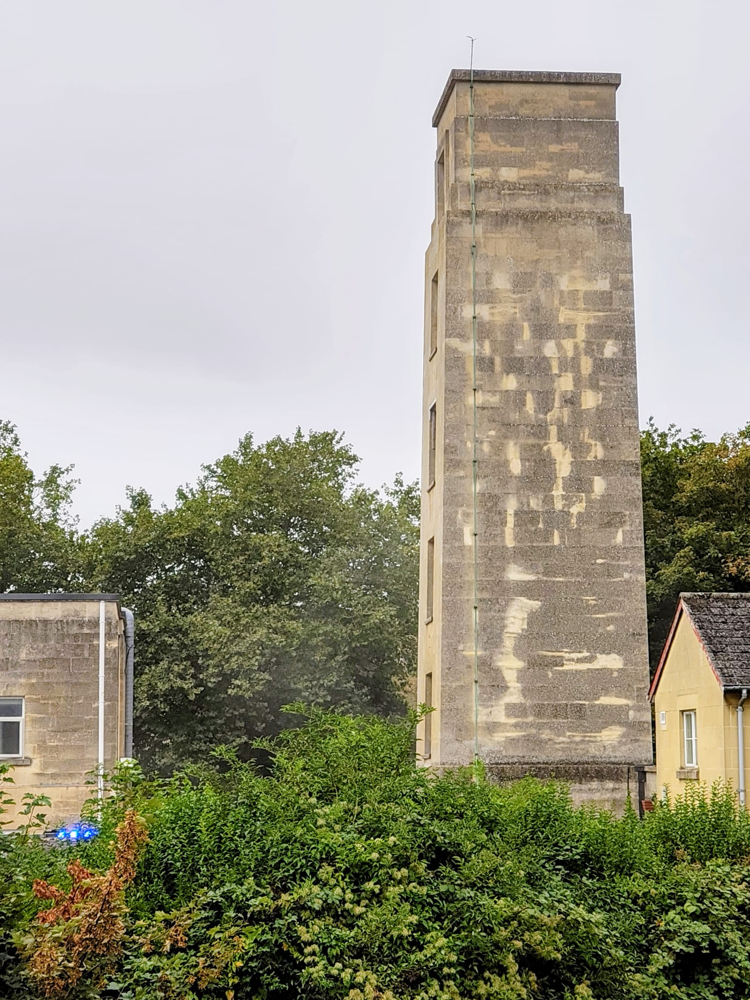

Bath Fire Station.
I live close to Bath Fire Station, a handsome 1937 building whose drill tower (*) is a local landmark; from my upstairs window I can sometimes watch the firemen practising by spraying it with water or even rescuing a man-sized doll from its upstairs window. There is a plan to demolish the fire station and replace it with something a little larger and much more generic. I hope this doesn't happen; below is the objection I submitted to planning, in it I welcome the new station while asking that it be the equal of the current one, however, I do hope the station, or at least the drill tower is not demolished.
The Twentieth Century Society has written a strong and interesting letter of objection, it is linked below.
(*) A drill tower I learned from the original application is the name for what I've always called a fireman's tower, the towers found in fire stations and used for practice.
My comment:
I am extremely pleased a new fire station is proposed for this site; the central location of the station is a great asset to Bath, not only does it put the fire and ambulance services close to where they are likely to be needed, it helps integrate these services into the local community.
The demotion of the current station may be necessary but it should not be shrugged off as if it had little consequence. The drill tower is a notable local landmark, integral to the look of the Bathwick Estate and dear to those of us who live here. The station itself is a proud piece of 1930s civic architecture, the workmanship and detailing speaks to the pride the people of our town took in its appearance. It is a prominent building on one of Bath's few approach routes and it tells the story of Bath, the progression from the Victorian town to the modern city. It is one of the few pieces of 1930s architecture in Bath.
With this in mind, it is disappointing that so little care has gone into the design and appearance of the proposed new building, the new drill tower is entirely there for utility, not for appearance and the station itself has no stature, no presence. The new building is nothing more than a slightly bulkier, a less finely detailed, and considerably less authentic version of what we have now. When the station was first built, in the 1930s the Bath stone was used to build a distinctly 1930s building, one that showed pride in civic architecture. The proposed building is not a distinctly 2020s building and it shows no pride.
If we are to lose a handsome piece of vernacular architecture, a building that helps tell the story of our town and one that includes a significant local landmark, can it not be replaced by something with a little more ambition?